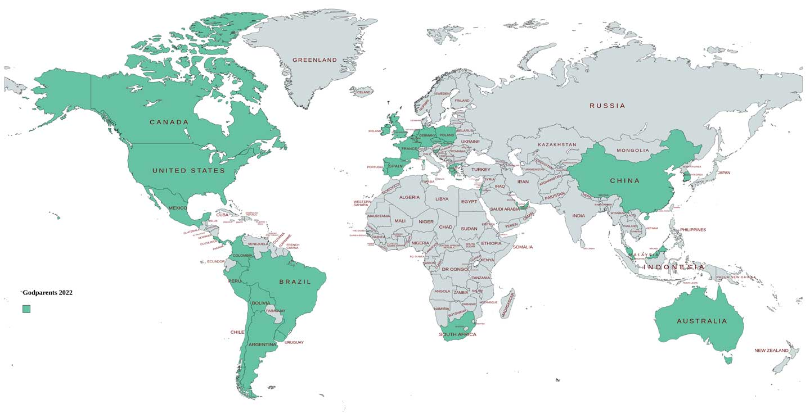

Godparents Network Uruguay
Godparents es un proyecto de innovación social de servicios educativos, llevado a cabo por voluntarios, no hay cargos pagos en nuestra organización. Su funcionamiento es enteramente virtual. Brinda apoyo a las escuelas de las comunidades rurales de Uruguay y alcanza a más de 4.500 niños y niñas.
Godparents is a social innovation project for educational services, run entirely by volunteers. There are no paid positions in our organisation.
